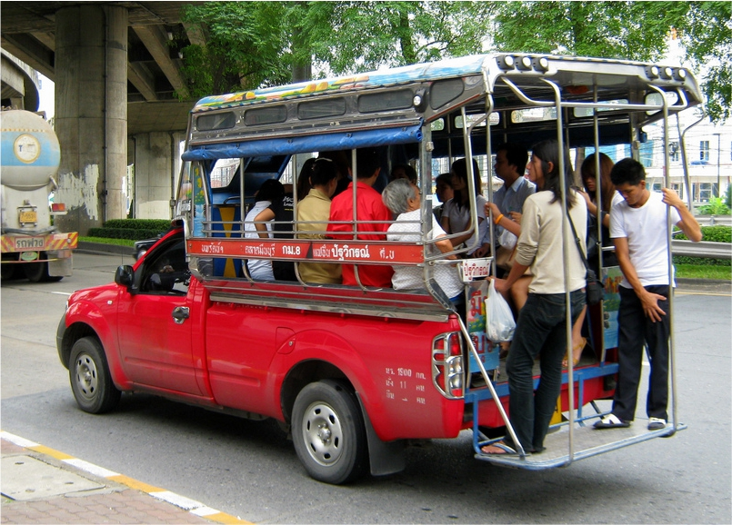
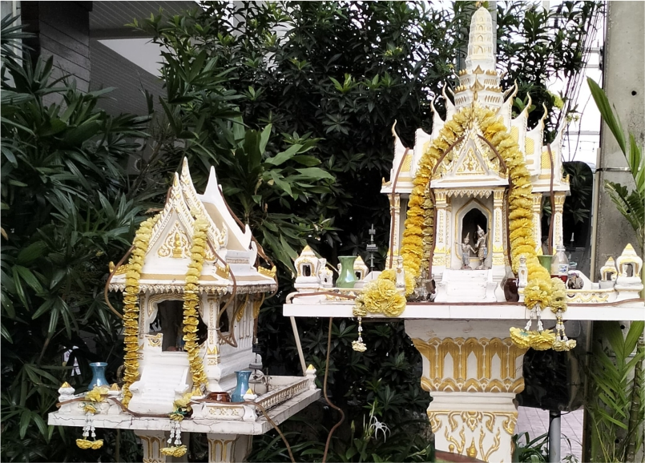
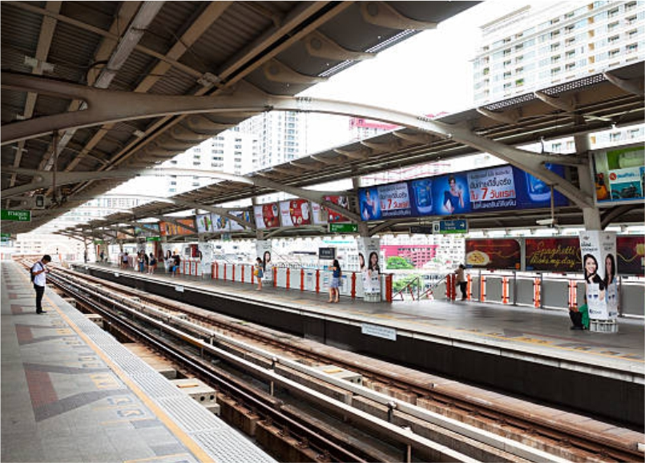

Petualangan Seru ke Thailand
Perjalanan di pagi hari yang tenang, sekitar jam 6 waktu Singapura, menandai dimulainya petualangan baru kami. Saya dan kakak baru saja bangun dari tidur singkat di Bandara Changi, masih merasa lelah dari perjalanan sebelumnya. Namun, semangat untuk memulai petualangan di Thailand tak bisa dipadamkan. Sarapan di Burger King, yang kebetulan berada di dekat tempat kami bermalam, memberi kami energi yang cukup. Meskipun hanya burger dan kentang goreng, rasanya sudah lebih dari cukup untuk mengisi tenaga sebelum kami masuk ke area pemeriksaan barang.
Saat pagi semakin cerah, Bandara Changi mulai ramai dengan aktivitas penumpang dari berbagai negara. Meskipun antrian di pemeriksaan barang cukup panjang, kami melewatinya dengan lancar. Setelah semua prosedur selesai, kami menuju gate untuk boarding pesawat. Rasa antusias yang membuncah tidak bisa disembunyikan. Akhirnya, petualangan ke Thailand yang sudah lama kami impikan akan segera dimulai.
Pesawat kami lepas landas tepat waktu, dan perjalanan selama 1 jam 26 menit itu dipenuhi oleh istirahat sejenak. Rasa lelah memang masih terasa, tetapi antusiasme kami untuk sampai di Bangkok seolah membangkitkan semangat. Ketika akhirnya pesawat mulai menuruni langit Bangkok, pemandangan kota besar yang penuh gedung-gedung tinggi terlihat dari jendela, membuat hati kami berdebar.
Begitu tiba di Bandara Suvarnabhumi, kami langsung disambut oleh kemegahan dan kesibukan bandara terbesar di Asia Tenggara ini. Desainnya modern dan luas, memberikan kesan pertama yang luar biasa. Setiap sudutnya terasa hidup dengan wisatawan dari berbagai negara dan warga lokal yang sibuk dengan aktivitas mereka. Setelah melewati imigrasi dan mengambil bagasi, kami menyempatkan diri untuk membeli minuman sebelum melanjutkan perjalanan. Saya mencoba berbicara dengan penjual menggunakan Bahasa Inggris, tetapi logat Thailand yang kental membuat percakapan sedikit membingungkan, namun juga membuat kami tersenyum—interaksi antar budaya yang unik.
Kami kemudian menaiki bus menuju Pattaya, kota wisata yang terletak di tepi pantai. Pattaya sudah lama dikenal sebagai pusat hiburan malam dan destinasi pantai, namun di balik hiruk-pikuknya, kota ini juga menawarkan ketenangan bagi mereka yang mencarinya. Perjalanan menuju Pattaya membawa kami melewati Chon Buri, sebuah provinsi dengan pantai-pantai indah dan perkampungan nelayan. Pemandangan alam yang memukau sepanjang jalan memberikan kesan damai, berbeda dari hiruk-pikuk kota Bangkok.
Setibanya di Pattaya, kami menaiki Song Thaews, sebuah kendaraan umum khas kota ini. Angin laut yang sejuk menyapu wajah kami, memberikan kesegaran setelah perjalanan panjang. Kami melewati jalan-jalan kecil yang dipenuhi oleh kehidupan lokal yang sederhana namun hangat. Song Thaews adalah transportasi yang unik dan ekonomis, memungkinkan kami untuk merasakan sisi lain dari Pattaya.

Sesampainya di hotel, kami langsung check-in dan memutuskan untuk beristirahat. Rasa lelah mulai terasa setelah perjalanan panjang, dan tidur sejenak menjadi pilihan yang tepat. Keesokan paginya, kami bangun dengan semangat baru. Kami memutuskan untuk berjalan-jalan di sekitar hotel, menikmati suasana pagi Pattaya yang damai. Salah satu hal menarik yang kami temukan adalah sesajen-sesajen kecil berbentuk candi, yang sering dijumpai di tempat-tempat umum di Thailand. Sesajen ini adalah bentuk penghormatan kepada roh-roh pelindung, tradisi spiritual yang masih sangat dihormati di sini.

Setelah berjalan-jalan sebentar, kami menuju pantai yang tidak jauh dari hotel. Pasir putih yang lembut dan deburan ombak memberikan ketenangan yang kami butuhkan setelah perjalanan yang melelahkan. Waktu terasa berjalan perlahan saat kami duduk di tepi pantai, menikmati udara pagi yang segar. Setelah itu, kami pergi ke 7-Eleven untuk membeli makanan praktis—nasi dalam kemasan yang lezat. Kami duduk kembali di tepi pantai, menikmati sarapan sederhana sambil memandang laut biru yang luas.
Setelah menghabiskan pagi di Pattaya, kami kembali ke hotel untuk bersiap-siap. Tujuan berikutnya sudah menunggu: Bangkok. Kami memesan Grab menuju terminal bus dan membeli tiket di sana. Proses pembelian tiket di Thailand cukup rapi dan teratur, berbeda dengan di Indonesia. Tidak ada yang terburu-buru atau berebut tempat, sehingga kami bisa menunggu dengan santai hingga bus kami tiba.
Perjalanan kembali ke Bangkok terasa singkat namun menyenangkan. Sepanjang jalan, pemandangan sawah dan perkampungan kecil memberikan gambaran tentang kehidupan pedesaan Thailand yang sederhana dan tenang, sangat kontras dengan keramaian kota besar yang akan kami tuju. Setibanya di Bangkok, kami melanjutkan perjalanan menggunakan BTS (Bangkok Mass Transit System), kereta layang yang sangat efisien dan populer di kalangan wisatawan. BTS membawa kami hingga ke Stasiun Ratchathewi, yang cukup dekat dengan hotel tempat kami menginap.

Malam itu, setelah seharian penuh perjalanan, kami hanya keluar sebentar untuk makan malam dan mencuci pakaian di laundry terdekat. Suasana malam Bangkok yang tenang memberi kami waktu untuk merenung dan mempersiapkan diri untuk perjalanan berikutnya ke Khao Yai. Keesokan hari, pegunungan dan pemandangan alam yang indah sudah menunggu, dan kami tak sabar untuk memulai petualangan baru.
Setiap perjalanan, tak peduli seberapa besar atau kecil, selalu memberikan kita kesempatan untuk belajar dan tumbuh. Perjalanan dari Singapura ke Pattaya dan kembali ke Bangkok mengajarkan saya bahwa meskipun kita terkadang merasa lelah, ada momen-momen kecil yang memberikan energi baru. Dari perjalanan naik Song Thaews di Pattaya hingga menikmati sarapan sederhana di tepi pantai, setiap langkah adalah bagian dari perjalanan hidup yang berharga.
Perjalanan ini juga mengingatkan saya bahwa dalam kehidupan, tidak selalu tentang kecepatan menuju tujuan, tetapi tentang bagaimana kita menikmati setiap momen di sepanjang jalan. Setiap tempat, dari bandara yang megah hingga jalanan kecil di Pattaya, memiliki cerita dan pelajaran tersendiri. Tantangan kecil, seperti menghadapi perbedaan bahasa, justru membuat petualangan lebih bermakna dan memperkaya perspektif kita.
Petualangan tidak harus sempurna. Justru dari ketidaksempurnaan dan tantangan itulah kita menemukan keindahan yang sesungguhnya. Thailand telah memberikan kesan yang mendalam, namun petualangan ini baru permulaan. Khao Yai, dengan keindahan alamnya, menunggu di depan mata. Dan dengan hati yang terbuka, saya siap menyambut apa pun yang akan datang, karena setiap perjalanan adalah kesempatan untuk melihat dunia dan diri kita sendiri dengan cara yang baru.
Tinggalkan Komentar
Hasil Komentar